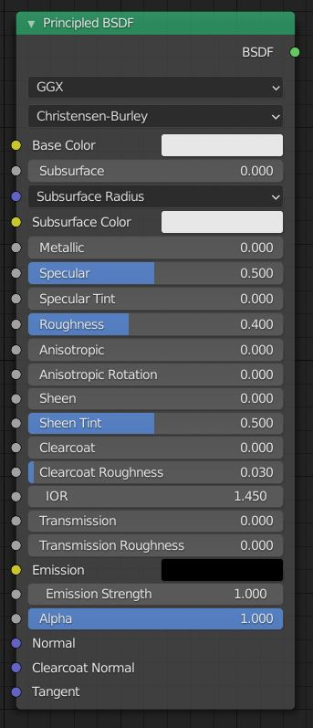
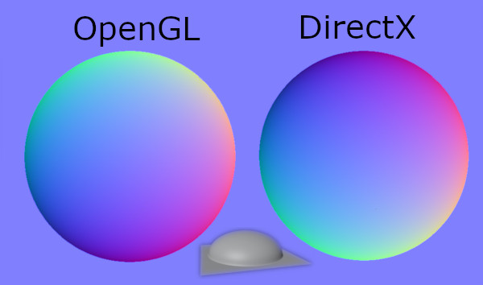

3d Bilgisayar Grafikleri
Kısa Tarih
Eskiden bilgisayar grafikleri yazılımla ve işlemciyle sağlanıyordu. Günümüzde ise bu işlemleri
çoğunlukla ekran kartları ile yapıyoruz.
popüler ekran kartı apileri
Ekran kartları ile iletişimi OpenGl, DirectX, Vulcan gibi yazılım arayüzleriyle sağlıyoruz. DirectX,
windows ve Xbox için microsoft tarafından geliştirilen bir kütüphanedir. Vulcan ise Open gl nin yeni ve
gelişmiş Versiyonudur.
opengl 2 sürümü de genellikle internet tarayıcılarında kullanılmaktadır. Vulcan DirextX performansına
denk performans göstermekte ve çapraz platform çalışmaktadır.
Texture Çeşitleri
Texture çeşitlerini göstermeden önce size principled shaderdan bahsetmek istiyorum. principled shader
doğadaki tüm yüzeyleri simüle etmek için disney mühendisteri tarafından geliştirilen bir standarttır.
günümüzde bazı oyun motorları performans için bu standartı karşilamasada genel olarak bu standarta
benzemektedir. shader da ışığın nesneyle nasıl etkileşime gireceğini belirleyen koddur ve genellikle
ekran kartı için yazılırlar, kameranın ışığı nasıl alacağını belirleyen koda da post processing
denmektedir.

base color (Diffuse veya Albedo da denmektedir.)
Objenin rengini belirler.
subsurface
Objenin içinden geçen sızan ışığı belirler. el fenerini elimizle kapatınca elimizin kırmızı görünmesi
gibi.(cilt gölgelendiricilerinde kullanılır)
metallic (metalness de denmektedir)
Objenin metal olup olmadığını belirler. metallerin en belirgin farkı ışığı hiç emmemeleri ve geri
yansıtırken kendi renklerinde yansıtmalarıdır.
specular
Objenin ne kadar yansıtıcı oldduğunu belirler bazı programlarda sadece specular kullanılırken
bazılarında specular yerine metallic kullanılmaktadır.
specularTint
Maddeden gelen yansımaya madde renginden karıştırılacağını belirler.
roughness
Maddenin yüzeyinin ne kadar pürüzlü olacağını belirler. Glossy map bunun tam tersidir.
anisotropic
Maddeye tornada işenmiş havası verir.
sheen
Bakış açısına göre değişen yansıma katsayısını ayarlar.
clearcoat
Maddenin üzerine cila sörülmüş havası verir.
IOR
Işığın ne kadar fazla kırılacağını belirler. (büyütecin ışığı kırarak görüntüyü büyütmesi gibi.)
transmission
Maddenin içinden ışık geçip geçmeyeceğini belirler. (Cam veya jelibon gibi maddeleri yaparken
kullanılır.)
emission
Maddenin ışık kaynağından bağımsız ışık yaymasını sağlar.
alpha
Objenin götüntüden tamamen silinmesini sağlar.
normal
Işığın yansıma açılarını belirler. (OpenGl ve DirectX için y eksenleri yani yeşil kanalları terstir.
Unity, Godot ve Blender OpenGl, Unreal DirectX kullanır.)

bump
Işığın yansıma açılarını belirler. normal map açısal olarak veri depolarken bu yükseklik olarak veri
depolar. (normal map çok daha fazla veri depolayabilir)
ambient occulusion
Işık hesaplamalarında kolaylık sağlaması için ışık alamayacak girinti yerlerin önceden hesaplanmış
halidir.
tangent
Yüzey normalleri hesapalrken kullanılan vektördür.
-Bunların Yanında-
displacement
Objenin fiziksel pürüzlerini belirler. texture rgba kanallarında da depolanabilmektedir
hdri
Gökyüzü görüntüsü taşır.
Örnek
Vector displacement
Displacementten farklı olarak objeyi ileri geri hareket ettirmek yerine tüm eksenlerde hareket
ettirmektedir
Örnek
light map
Işıkların performans için hesaplanıp depolandığı dokudur
*bilgi
Farklı dokular için farklı uv haritaları kullanılabilir.
Meshler
Meshler fizksel olarak yüzeyleri depolayan verilerdir.
depoladıkları bazı veriler.
*noktalar (vertex)
*yönler (normals)
*yüzeyler (faces)
*nokta renkleri (vertex color)
*doku kalıpları (uv)
vertex
3d düzlemdeki pozisyonlardır. Ayrıca mesh içinde shape key(morph da denmektedir) kullanarak doğrusal
hareket elde edebilirsiniz. Shape key yerine kemik (bone) de kullanabilirsiniz, (bu size sınırsız
hareket imkanı sağlar.) ama bu da oyunda gereksiz kasmaya neden olabilir. (Shape key kullanmakta ram den
yer, ama günümüz bol ram li cihazlarında bu daha iyi olabilir.)
normals
Her vertexin ışığa nasıl tepki vereceğini belirlemek için bir yönü vardır. Normals bu verileri depolar.
faces
Vertexlerin yüzeyler için sıralarını depolar. Her 3 vertex bir yüzey oluşturur. bazı programlar daha
fazla vertex kullanarak bir yüzey oluşturur, ama hata çıkamaması için çok vertexli yüzeyleri üçlemeyi
unutmayın. Bu duruma bir istisna var, iskelet sitemi olan veya olamayan hareketli meshlerde 3 vertexli
yüzey(tris) kullanılması yerine 4 vertexli yüzey kullanılması önerilir. (Bunu yapmak texturedeki
kaymaların ve normaldeki bozulmaların önüne geçer.)
vertex color
Her vertexe özgü renk verebilirsiniz ve bu renkleri uygun shader ile kullanabilirsiniz. bu renkleri
blender gibi programlarla 2d doku üzerine pişirebilirsiniz. (bake)
uv
Vertexlerin 2 boyutlu dünyada başka bir pozisyon bilgisini taşır. bu bizim resimleri objelere
giydirebilmemizi sağlar. (Bunu kullamak yerine farklı projection yöntemlerini de kullanabilirsiniz.)
Post Processing
Işık kameraya geldikten sonra yapılan işlemlerdir.
bloom, vignette, motion blur, depth of field, ambient occulusion, anti alising, lens flare gibi işlemler
örnek verilebilir.
bloom
Işığın fazla olduğu yerlere parlama efekti ekler.
vignette
Ekranın kenarlarını karartır.
motion blur
Hareketin olduğu yerleri bulanıklaştırır.
depth of field
Odak noktasına uzak yerleri bulanıklaştırır.
ambient occulusion
Işığın zor gireceği dar yerlere nasıl davranacağını belirlememizi sağlar.
anti alising
Pixellerin renk kalitesini arttırmak için ekstra işlem yaparak görüntüyü
iyileştirir.
lens flare
Işığa lensden yansıyor efekti verir.
Bevelin Önemi
Bevel objeleri daha gerçekçi algılamamıza yardımcı olur. Eğer objenizde normal map kullanıyorsanız,
bevel görünümünü normal map üzerine high poly objeyle veya high poly olmadan(çeşitli shader sistemleri
kullanarak) bake alabilirsiniz.
Texture Kullanımı
Textureleri proje yapım aşamasındayken sıkıştırmamaya dikkat edin. jpg ile resmi kaydederseniz o resim
sıkıştırılmış olur, jpg yerine png ile kaydedebilirsiniz. Bir resmi ilk kez sıkıştırınca sorun olmaz ama
proje yaparken defalarca düzenleme yaptığımız için resim kalitesiz olacaktır.
Işın İzlemeli Render
bu render yöntemi ışığı en iyi şekilde hesaplayabilmek için ekstra işlem yapar ve diğer yöntemlere göre
daha yavaştır, ama kullanımı daha kolay ve daha kalitelidir. işlemciyi veya optix, cuda ,openCl gibi
teknolojileri kullanabilir. bake işlemleri genelde bu teknoloji ile yapılır ve bake edilen resimde
karıncalanma olabilir. karıncalanma olan durumlarda open image denoiser vb. denoise teknolojileri
kullanılabilir. Film, reklam, vfx gibi alanlarda çoğunlukla bu teknoloji kullanılmaktadır.